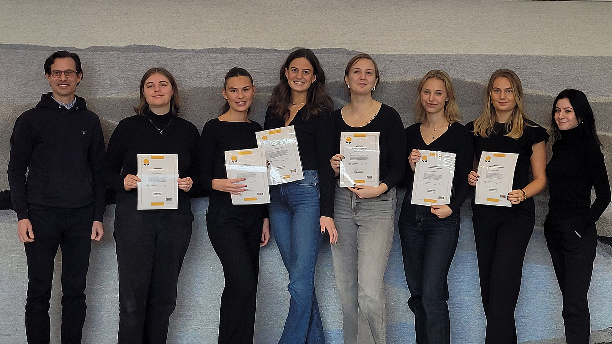
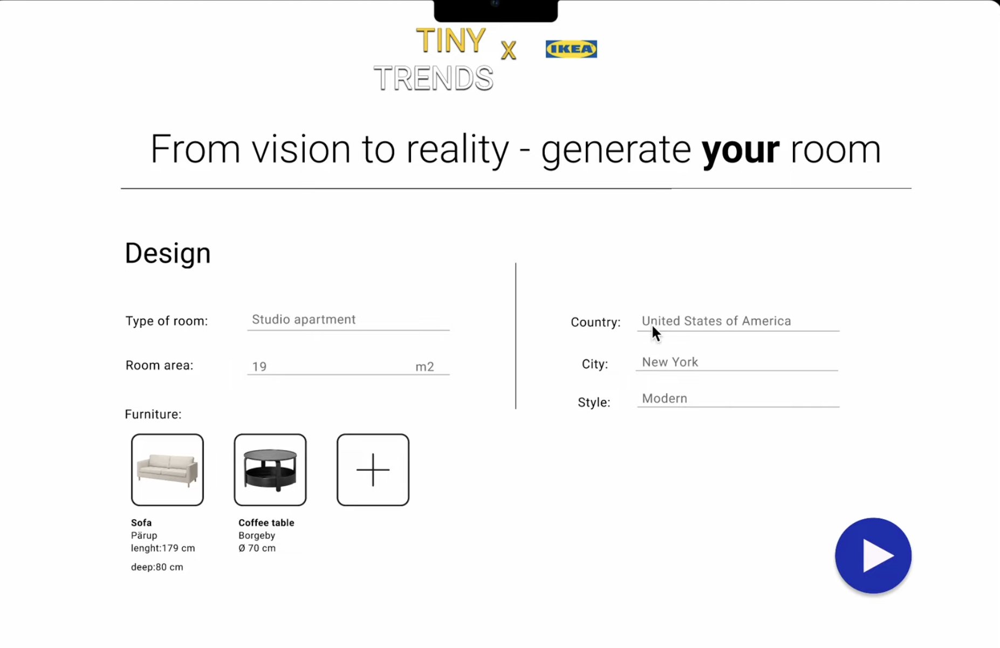
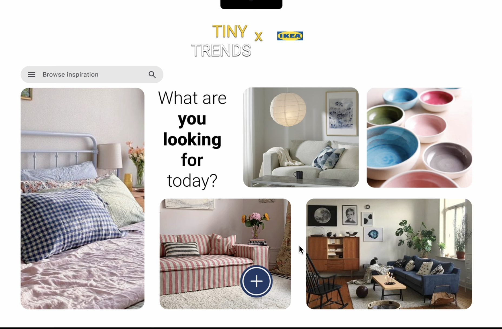
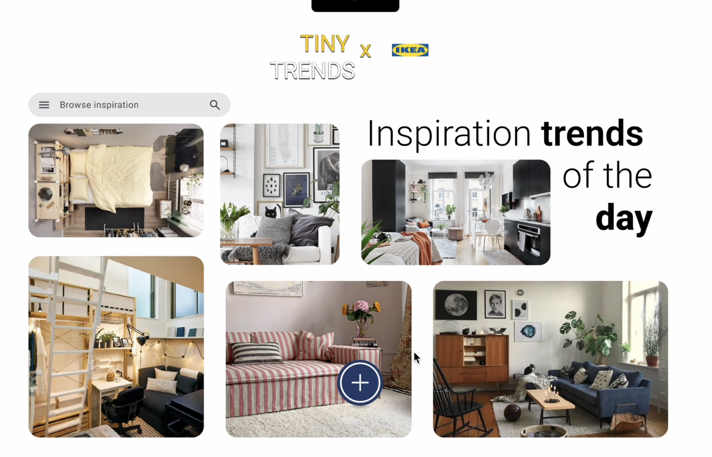
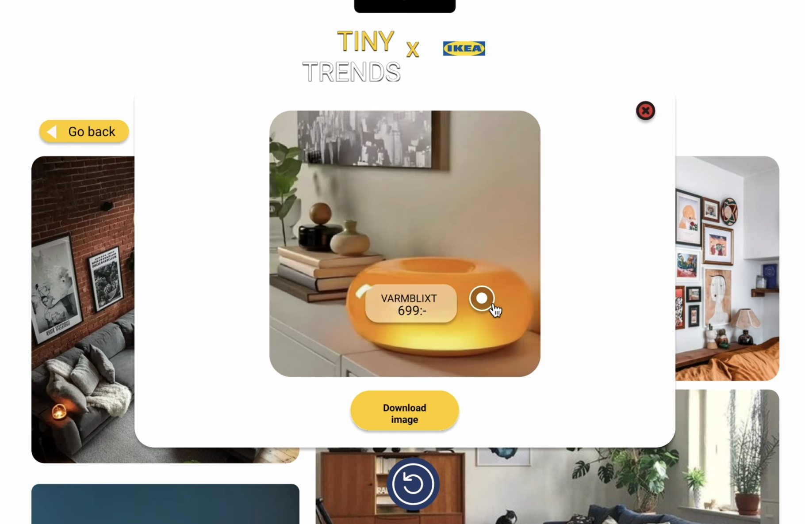
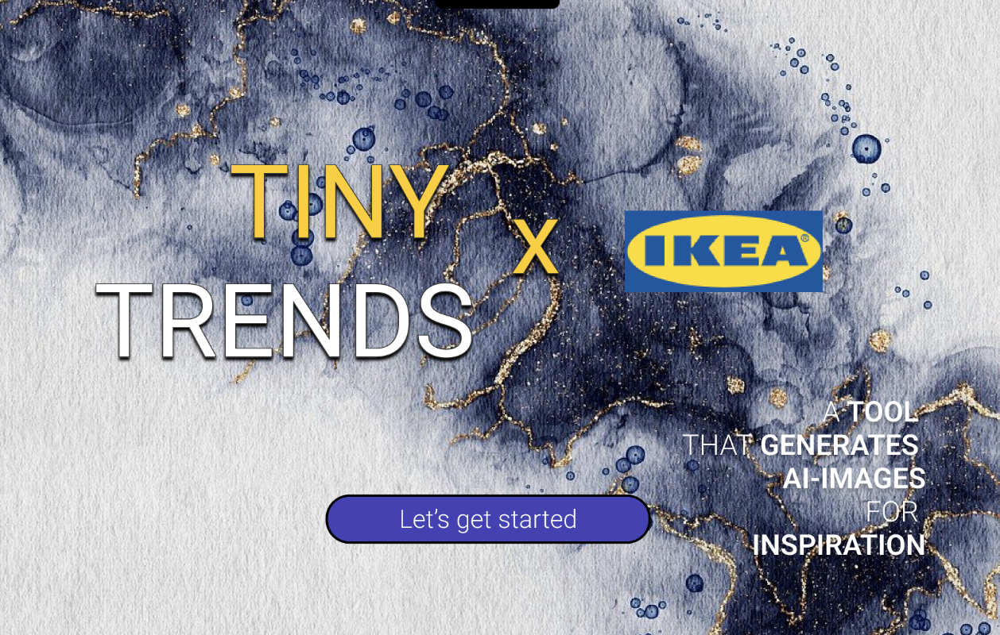

Tiny Trends
A capstone project developed in collaboration with IKEA, exploring how generative AI could create more relatable interior design inspiration for people living in small spaces.
About the project
Tiny Trends was developed as a capstone project at Chalmers University of Technology in collaboration with IKEA.
The project focused on a problem we identified around interior design inspiration for young adults and students living in smaller homes, such as studio apartments and student housing. Existing inspiration often presents large and fully furnished spaces that can be difficult for this target group to relate to.
Our solution was Tiny Trends — a concept for a digital tool that uses generative AI to create interior design inspiration based on the user's actual living situation.
IKEA x Chalmers Innovation Challenge
Tiny Trends was developed as part of the IKEA x Chalmers Innovation Challenge, where student teams worked with real challenges provided by IKEA.
Our team was selected as one of the winning teams in the challenge. The projects were evaluated after a design thinking process involving user interviews, research, concept development and a final pitch to IKEA.
The experience gave us the opportunity to develop a solution for a real industry challenge and present our concept directly to representatives from IKEA.


The idea
Tiny Trends allows users to generate inspirational interior images based on criteria such as room type, room size and preferred style.
Instead of showing idealized interiors that may not reflect the user's home, the idea is to generate inspiration specifically adapted to smaller and more realistic living spaces.
Users can also browse a gallery containing images previously generated by other users, creating a community-driven source of inspiration.
Generative AI
Generative AI was central to the concept. Our proposal explored the possibility of an AI model tailored to IKEA and trained using relevant image data.
This would make it possible to generate images that reflect different room sizes, styles and living situations while incorporating relevant furniture and interior solutions.
We also considered challenges associated with generative AI, including quality control, ownership and legal and ethical questions surrounding AI-generated content.




Design thinking
During the project we evaluated the concept from the perspectives of usability, feasibility and viability. This helped us consider both the needs of the user and whether the idea could realistically create value.
Target users
The main target group was young adults and students living in small spaces with limited budgets. The concept aimed to provide inspiration that better reflects their actual homes and everyday constraints.
What I learned
The project gave me experience working with an industry partner and approaching a technical problem from both a user and business perspective.
It also gave me practical experience with design thinking, generative AI concepts, prototyping and communicating a technical product idea through pitches and presentations.
Project website
The original project website contains more information about Tiny Trends, our design process, the team and our presentations.
Visit Tiny Trends →